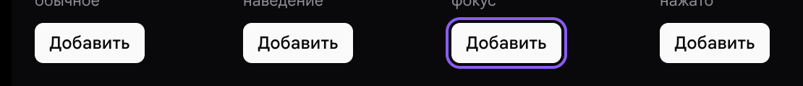
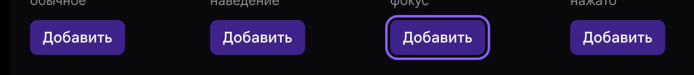
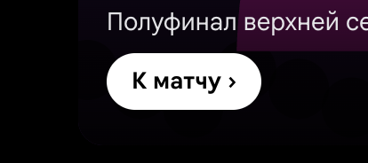
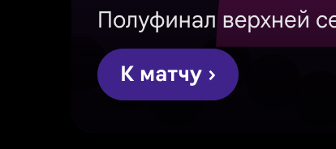
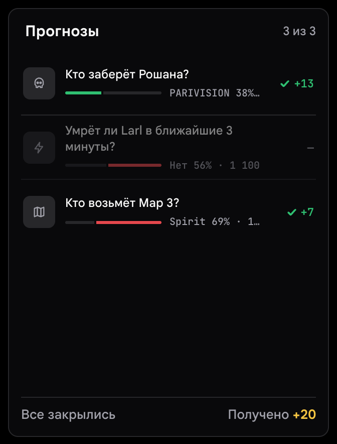
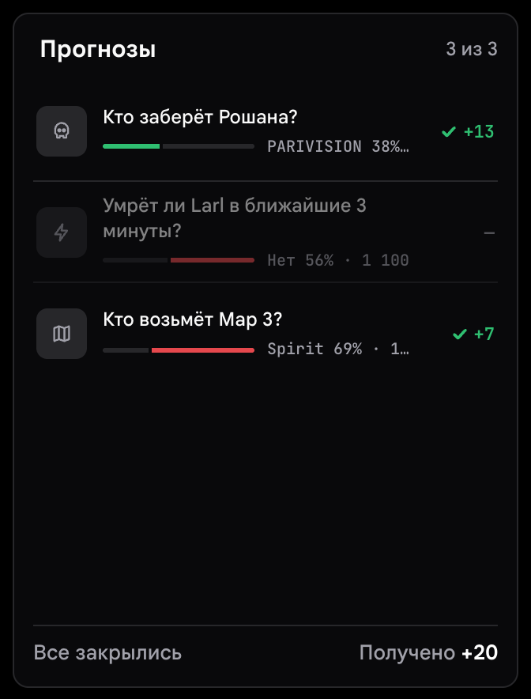
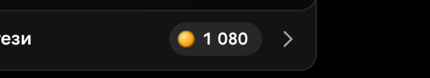

Дочистка — что нашлось ещё
Прогнал все истории Storybook тем же поиском жёлтого и белого. Ниже то, чего не было в v1 и v6. Цвет везде #3f238b.
Нашёл ещё сверх v6, меняю тем же цветом
Меняю сам атом, тогда все главные кнопки станут фиолетовыми. Выбранные кнопки у участников (#5 v1) переведу на «чёрный поднятый», иначе они тоже станут фиолетовыми.


Кнопка-призыв поверх истории.


Звезда — белая, как соседние значки. Счётчик — плашка #3f238b с белой цифрой. Скрин не снялся: в истории они появляются только после действия.
Стоит в конце подписи и обрезан троеточием, на экране его почти не видно. Делаю серым, как остальная подпись.
Вопрос жёлтое, но может быть «золотом»
Всё это баллы портала. Если баллы — тоже «золото», оставляю жёлтыми. Если нет — «+20» белым (на скрине справа), монеты — фиолетовые.



Пять цветов для пяти позиций, как на Cyberscore. Оффлейн (3) — жёлтый, керри (1) — индиго, похож на акцент. Предлагаю оставить: это цвета позиций, не акцент.

Охват
- 6 страниц демо на 1440 + вкладка «Статистика» на матче (v1).
- Все 333 истории Storybook
ui/: все состояния матча, турнир зритель и редактор, новости, атомы. - Не трогаю: белые полосы рейтинга у игроков (это данные, не акцент), скелетон графика, логотип.
- Не проверял: телефонную ширину и наведение.